Board pack is due, so each fee tier needs its own slide: split this deck's tier slide into one slide per tier line, title exactly the tier name, body exactly the bps figure as written, ordered lowest bps first, and keep the intro slide first.
{
"config": [
{
"type": "execute",
"parameters": {
"command": "mkdir -p '/home/user/Documents' && printf %s 'UEsDBBQAAAgAAOG0Cl1exjIMJwAAACcAAAAIAAAAbWltZXR5cGVhcHBsaWNhdGlvbi92bmQub2FzaXMub3BlbmRvY3VtZW50LnRleHRQSwMEFAAACAAA4bQKXQAAAAAAAAAAAAAAABoAAABDb25maWd1cmF0aW9uczIvdG9vbHBhbmVsL1BLAwQUAAAIAADhtApdAAAAAAAAAAAAAAAAHAAAAENvbmZpZ3VyYXRpb25zMi9wcm9ncmVzc2Jhci9QSwMEFAAACAAA4bQKXQAAAAAAAAAAAAAAABoAAABDb25maWd1cmF0aW9uczIvc3RhdHVzYmFyL1BLAwQUAAAIAADhtApdAAAAAAAAAAAAAAAAGAAAAENvbmZpZ3VyYXRpb25zMi90b29sYmFyL1BLAwQUAAAIAADhtApdAAAAAAAAAAAAAAAAGAAAAENvbmZpZ3VyYXRpb25zMi9mbG9hdGVyL1BLAwQUAAAIAADhtApdAAAAAAAAAAAAAAAAGgAAAENvbmZpZ3VyYXRpb25zMi9wb3B1cG1lbnUvUEsDBBQAAAgAAOG0Cl0AAAAAAAAAAAAAAAAYAAAAQ29uZmlndXJhdGlvbnMyL21lbnViYXIvUEsDBBQACAgIAOG0Cl0AAAAAAAAAAAAAAAAMAAAAbWFuaWZlc3QucmRmzZPNboMwEITvPIVlzthALwUFcijKuWqfwDWGWAUv8poS3r6Ok1ZRpKrqn9TjrkYz3460m+1hHMiLsqjBVDRjKSXKSGi16Ss6uy65pds62ti2Kx+aHfFqg6WfKrp3bio5X5aFLTcMbM+zoih4mvM8T7wiwdU4cUgMxrSOCAkejUJp9eR8GjnO4glmV1F066CQefcgPYvdOqmgsgphtlK9h7YgkYFAjQlMyoR0gxy6TkvFM5bzUTnBoe3ix2C904OiPGDwK47P2N6IDKblXuC9sO5cg998lWh67mN6ddPF8d8jlGCcMu5P6rs7ef/n/i7P/xnir7R2RGxAzqNn+pDntPIfVUevUEsHCLT3aNIFAQAAgwMAAFBLAwQUAAgICADhtApdAAAAAAAAAAAAAAAACAAAAG1ldGEueG1sjVLLboMwELz3K5CbK5hHlIcFROqhp0i9tFJvkWNvwC3YyDYhn9/gAE2THHrzzs7u7Iycbk515R1BG6FkhqIgRB5IpriQRYY+3l/9FdrkT6k6HAQDwhVra5DWr8FS7zwqDSk051WGSmsbgnHXdUGXBEoXOA7DBBeYU0v9o4DuGQ0T/XCGWi2JokYYImkNhlhGVANylCC/XOLOutScTVJNqysnxBmGCvohg6MgwiP3VAn5/eiyaL1eY9cdqUqpidhfcfE72pjjSz2xXfVfC0N2zsTwvgo8QfmYbu81T53jKWhjqRXGCuY53NJ9BT5TrbQZOu9zoKhpcQeq/Rcwe4s2V8xowjQtNG3KsbEYGp3SfMTieABZeaYzC3paE4/LpZJ+VwoLpqHsLHPHDOcIDwYLkKCpVTrfir2GN5cAXgZJsAzi2VbI9rT7XC12i7l3Rdg1WvW2cBLOXlpRcT9O8c2+FP+JEz/6uvkPUEsHCKoKuU1oAQAA+AIAAFBLAwQUAAgICADhtApdAAAAAAAAAAAAAAAADAAAAHNldHRpbmdzLnhtbL1a3XPaOBB/v78iw3tKcu20KZPQMSQ0XCEwQJq5exP2gnURWo8kB/jvbyUbmiaQpjF7T+CvXe33b1c6/7JaqKMHMFaivqidvjupHYGOMZF6flG7nXSOz2pfmn+c42wmY2gkGOcL0O7YgnP0ij2iz7VtxKhnkj7IjW6gsNI2tFiAbbi4gRnozWeNx283ArPizkpJfX9RS53LGvX6crl8t3z/Ds28fvr58+d6eLp5FRG3L3raxcrCy3+enHyoF9fbt8PVaxdWShkWVv5/pJr3teZGDxvxm+elLMXPsXSw8Lo5Km97Zhc1WnLjQcJyq7Xaru9+/uY7vR8ZEBPMapsnbp3RE4V6XmuenNefk3g92R7MHAfdO5m4lIPwNch5etAlj1NcjiAh34J2KvQc7BPqU0QFQteazuTwNh5d3TK4tNDHBPZRnwll95DfcdP70Ou9rriRG+HIh3/H/YZGajc0aDOIn2r9NSt/Ff0R+OiChIv+mIRV8BdO91q2KgcfRkPB4jqB/kRMFRvxNmpnUHGR93ppifh+bjDXe21ckcmlEcvg0jzkW4oE6JCe2Dwo0hpdCM8dOcKmaNybE1zhQbByQ5ICUlQJGBYx0FGS6EhQCY+aAv0W4v1CmHsOFleLzK0vp0GEa5mAHQojDu9Sl9L6eB7MZj42hmiltzu5L4NI43zqjCCzqLWNdEyOBEkUrnhMlPWojo4zEZM445Q87952pLHO3z68JqMsU2tvpLkRWdont+igWQg3wZt8MQXDo9OvuXNgIvcckx2C+oRQTlmy2qjyBUEHEPeRDXnU/2Vx/Ckk47WlB1xZLrBo4yJTsBrHRmbuRU5v94nAKLJSaH42PcrY/wObgVbrWwJIXLbxCEDqHHN7pROqQ/uhRlUHYJNAySyDZChjlxuW5XcUCud83r5Bqj9zqTm43OqpD/HAZpPBOPhcgyAUUObpFihc9oR1L5W7CswiRfQDCiEM3hY6BnX4QKH4GKgkcAHTB2dkzKE4QuID6lb6wQN46NsRKMorDzDBrk5A7+27qiqLs0Z2NWmJwJr54WZc0HkoMjAdg4sxuJyjIt9miXDgOUyA6hf9P7xF2rkxZOpLQSlGWKr8i4XQyYTIP+FFAr+5EyAQdl8Is7/JOH1jjCeJzx6lqScYOtY2KI62smPoJ8odLv2U6U66tE+wlil57TbMU925EEb1V3osGB/Yfu5IlHtijfnTGC8JNlM5T4+poBEQ9D1CBZRMIW+8EEwdckesbujqzXp5omb/O8bcxBUoEiSIbDsVvv0huF42P3eGXjXUAAUv4igRXfsNjA4IdJhrAiShrefo7QTViJSSuBaSp6L6bgqMnx3cUYOV8SRxSh1XK7KJFqpHsOQFJhUaxSI9haz0i3L0diZjt1Zgb/ASZiJXHONS783OZ74iizPFMlXsXZWUwvLjh5bUwqxfE387VB65sSMBDr/skZVPU3Kok2efzk4/nVXoVxJINimpUnoLIyVOww1y53cwevAA6u8wguNEdx1E5/vEri5GFBP004krjvFupORckxONHWabURkD/NqUCT+hoHrr9/p2gK8DDGLBVHIkn/O/KpwKdVnuWXpQxzaWBsOPrjdl5tHkkKfK+HT0iAkvSN2KNZj+C7HjnfIGW331M9AXut4KhY3Amd+82QCB8UKovYCj2hyKEvkPwDHQpDzSHAOrvr2j3tRH+8QQevJTECV4Aom8LAo7hEU3T16xnVjbru5Jy7ex6vfKmfYly0EIX8B255rw+nbzoFBeV3OWtfIYQLnTRNH6DdYVUdAl3qD7K7dOztZeDBvaVaFzobiG+T/t2Y8mPS4WYbeMybuC2kZgIcwkI+eMpbgh2/sBMk91CP3gYDYjnixdYXBnP96LdFLkGpLIu0RbqDhXXE1iD0UyorYKtXrmywcgHwzVFpkfu/tNeErYdqC9V/BY6TsYJ2OhmK11q1dknRj+AYPUnP6iL600LOiJKWzBHE/5UTDC5TcADvjmW68RtQOHbr9CirmW1IFpDwcYDywQSmMFGH2pfZgXJ9da6w5LHP44YeMTpq/MvzoSU3Hw9L04EDnQbYWWI9j7wqUtqra+Iocm8KX4qIBtPZalBGaHQPGuHWWujx9ZsK1SxAVC1fQ9B8/ZkhKWzRQuf5/43nOG9WfnXev7TgI3/wNQSwcIYr7UClgGAABLLAAAUEsDBBQAAAgAAOG0Cl3YfBANigkAAIoJAAAYAAAAVGh1bWJuYWlscy90aHVtYm5haWwucG5niVBORw0KGgoAAAANSUhEUgAAAWoAAAIACAMAAACcgdZwAAAAVFBMVEU0NDQ+Pj5ERERKSkpUVFRcXFxjY2Nra2tzc3N7e3uDg4OLi4uTk5Obm5ujo6Orq6uzs7O7u7vDw8PLy8vT09Pb29vj4+Pr6+vz8/P+/v4AAAD///8yrHUFAAAI8UlEQVR42u3b6ZLbNhZA4aRbIrEQIPbl/V90Lki14zjO2ImTqZryOVmaLVH68YmGrij6l0n/o36BAGqoCWqoCWqooSaooSaooYaaoIaaoIYaaoIaaoIaaqgJaqgJaqihJqihJqihJqih/omps9b90y/H+l/TOn+2gzPxt21Mf4DapTnDDNUds9rnkFuKgHcrt9m2dtjGcwTb46gl+DlP28N6BP116k0PNVU8XFb9pn7TbT+3uJ167fBUqshmXPJq5v00OuUD3L9BLYuFmnuMIe5TfRzVW87R5NdRraLNbWi1dlyb1uwJ3L9O7YXamk2oU9Dv65YiK3LQpqt7kVbTx7Wp/HTvfshmuhcaYgKB+qenDuFsXwwU6VqJx6cZ77o3WxaNH52rt9jKKT9lzc5xcZ4ujJlTW0u13Dqi6nXUacbssYP6AwuIfILpu0wWNvb3uGaOqNI8j9Qe3gVrko7v9ahu6iFzigL1x6hlyrDW5W7uW7qJps9m22GsKzICCvUhR3V/HB7UH6POj5S1r93eS7XfZaj2Qm2T3Gr9W9/MMQ839vME9QeoZc2opcxWr81rsJafrclv/bpVfm1NDv0yR+GtkWHv/4I6fX4ab/YxS31thvaV3Xv6dPSvPwDn2Vu4jvXUof7GORAXRy9RxGWgm0kdNfh7rt7kRUhF7kgjx+slaaHPIDc+orwOl2/LW3+may45Qpl5jYkR6q+3jXPEPa6xzpTsbRhB63VcF3mTDIcu+6bj43Sn03XPdaZjtq3N7TX3DTX3/XqzPA5V35IeWx5Qf5166hLDPGryZlf1zDPEM72obYvBGB+Ork0LIeogM+CaDdvD3cPIGYca+/XHowTh3+exN6i/2mm2GuPMSlXr3mYU0nhey/fuY9J7NfYM7/aMZm+ns8PvdW5J7jxfr9R4On0d1WbrvzrbvSpQ/8mw1+YY148+1uDXxxjXEjDqmDLk9darXZOgbK7Rr1w/152vUbHfb6Oyn3zYkSf4GQ/qf2zYG997nP683xh81+mm83IsZnx1rpsfJ/q+LMj9n/0qS9C97LQM9Z+k0tarDHFW1oVQr3Gtyn/X5vExDcowWKLMfLKfbM6YZpI3yM218Zq9yy9D3d+PFSPqsc31nFD/nlo9R5LRwS7FrclY1wTNhD3r46LeZcVW3mtt/XtSVTaTzetk4NBp6LBdz2L2adR16ULZ/PlM29xKg/oL6m6Lcs9p5MB2j2qbldFvPp0LZ/2gTmeXkS+69c26bA6rhgx882jz4d11itu8pTWNLGrX9Zr5gkpQf0Httrr5x/QyO/v3arrtu2/ucHXXF3XQrm0mWKF+c6bvJlS/jfjI8pBm3XUo9/Js3l0fasrDxKfb5U4H9RezXu1ztDXljTWn9XnPdPWa8l5T3PWvDIFrluvXQDjrOlOyHvJake+TgGtakedSbXyMgFD/vdI/vB/U9C/N1cqONSGPPtYZ1Gu1PcqI6yPkuD5H9utzd32q+2Nku8609nX3vXho7avZyv0eK3f2+XoiqL+cQATLmvm08bT3hWTPs9dnH9rHrFU57NsFd+Sp7D53l5Le8vbYuzL3RQ1NXgt/nTp9s0d+6GSPCPUfk1lunQiVf0Rbr1m46DLWpQinTIDGpH3ep0tdnlreGO36NvJ0Xptzt9e3ukP3S3s92dyLa/bUCeo/5n0ee708Tc4fl0cOXYey5fSlq3JdyTfkENZDj61VH3T0xhR9Dx176n27v3V8r6rswde6Qf2V4jmrbzOL5hnuIVlmCCdeI83oR7/XhurcyLLX2vdMveY8k78+ELojtsNda3X0PZtTPsY0qP/92s95du+7qGVaCPfZuNep0vq62KO1T3PE+P3nERk9XtNH5WqF76cO+hjVXOJG4GRUG/dfjunvR7rGOpn5ap5dPir2+7xp2Y/p31/vlddDPuSh/m9t69IaM4vaqzZ7dzasM0+L+uFLVo9s5L3QW5m2fVf3MGLtsYaNi1pt/e2wY3Md6m9Sj2cR6qOk0/Qja2PW+dRFvZdum89r7Fjf3co4Z8M13enk0gd1CWENisoMqL+VDTJGqx7dkXRQyZxCnW/q2s9zzzY9xvqORtdZfr1ehNOb3J/39OFMfS9qFJug/vZivS6nietHjnmGlOfwS3R4OXZPQfWpy/A9mxv3VQjXQ6K7BsP1Zfsuu58/+9+u+weGvfT57HF89etcLgSenNmDGmqCGmqCGmqoCWqoCWqooSaooSaooYaaoIaaoIYaaoIaaoIaaqghgBpqghpqghpqqAlqqAlqqKEmqKEmqKGGmqCGmqCGGmqCGmqCGmqoCWqoCWqoCWqooSaooSaooYaaoIaaoIYaaoIaaoIaaqgJaqgJaqihJqihJqihJqihhpqghpqghhpqghpqghpqqAlqqAlqqKEmqKEmqKGGmqCGmqCGGmoIoIaaoIaaoIYaaoIaaoIaaqgJaqgJaqihJqihJqihhpqghpqghhpqghpqghpqghpqqAlqqAlqqKEmqKEmqKGGmqCGmqCGGmqCGmqCGmqoCWqoCWqoCWqooSaooSaooYaaoIaaoIYaaoIaaoIaaqgJaqgJaqihJqihJqihhhoCqKEmqKEmqKGGmqCGmqCGGmqCGmqCGmqoCWqoCWqooSaooSaooYaaoIaaoIaaoIYaaoIaaoIaaqgJaqgJaqihJqihJqihhpqghpqghhpqghpqghpqghpqqAlqqAlqqKEmqKEmqKGGmqCGmqCGGmqCGmqCGmqoCWqoCWqooYYAaqgJaqgJaqihJqihJqihhpqghpqghhpqghpqghpqqAlqqAlqqKEmqKEmqKEmqKGGmqCGmqCGGmqCGmqCGmqoCWqoCWqooSaooSaooYaaoIaaoIaaoIYaaoIaaoIaaqgJaqgJaqihJqihJqihhpqghpqghhpqghpqghpqqCGAGmqCGmqCGmqoCWqoCWqooSaooSaooYaaoIaaoIYaaoIaaoIaaqgJaqgJaqgJaqihJqihJqihhpqghpqghhpqghpqghpqqAlqqAlqqKEmqKEmqKEmqKGGmqCGmj7rP4lUfqolK823AAAAAElFTkSuQmCCUEsDBBQACAgIAOG0Cl0AAAAAAAAAAAAAAAAKAAAAc3R5bGVzLnhtbO1aW6/jthF+768wFKRvtOTLudhdbx5SFA2QTYvupq8BLVEWs5QokNSxvb8+Q1KUKFmytWddoEDOeTiAOR/nxpnhkNS7H045m70QISkvdsFiHgUzUsQ8ocVhF/z66R/oOfjh/V/e8TSlMdkmPK5yUigk1ZkROYPJhdxaIud8F2RKldsw5CUp7Oici0O4jKJNaH8H9ZxYypVq8MfjcX5cGeyn/4SahhQ5qdChRamu8H4IBSm5UA6dxA24rAQzsCQOCSNadxku5ouGc5xhAbwrUWw5llRuC5wTuVXxVstx9m498NY4yQ7Il8PUuQBFMc9LrOieEZ9JIvBxKheNhaXxp2tHTZ2usf5cWLP4imPXYYxZ3Bir13yyuRrcE3W8KuooqCLCwXOi8FRZGuuLOjFafB6KrcVmswkN1UFTPlXISTKU8pElvB77617s219TBdep1wmYVTI9YFZJJ1rwfvoiGrA/u6jyPRGTZWOFL+MgnW44zFs2iQqR2Ea6ODS1KOVVAZKgftXcyKkkgmoSZmbatsPhwhu3CpcB+cl6dcIiCjXG4Q8iSdhQLALrVQh1CXyEXig5fudmMP4KM+sg8Th0AobnIyosQkAg8qLrYpMTlDAXX411g0I5R7lEtIC85eXWm+0Lz7HKRpLxOfwARPPvw89tSop8aohobKcex4KWk6uhRXcqR6bywdWylUNTg1ntEG/TXAXv3Q6ZctgdUxwTlJCYyffvbAI0wzP7W6u1C/5Ofsf/rWYfcQHOhw3CwXLKzrvgr7jk8m8exg4Esw5LjUUHUsCyQCmXRyplB1FSFYP/X7CgJo7DySrNPvCCT9HLACcol/OEiGJIu5SeSPIVqi3u5a6zVCS/h7+AX3pTKQ2aoJXgOR50k69UOBZw9bjt0JzyCUlxxeq+zXGudTwIXGY0Dhy2/o1KSGoiFIU+T9slleCfCWyAjMMO8N1q/fiA18FMFztIesYaytNyk8bgjJRvj8AK8VKZPCk40r/rKTLDCT8i0FYShU67IJovFs8LWgzSz5d0Bb0Ygr2cIFniGJoilHFBv3Bdmix6sb6GftG2xQNYqBOT+V5gh7jW7mZgzpGqDNmOLcVMeuFVYoGN5zt+NySNR7hSXAuBmKMJ4RaKWZlhJ8DosRcEQ+8Di0Vj5Si6tdLK6QTcBUwgte+EFy0Sosuj7ux9a5ySTkfYCSGCeCl1/I2r3cC13hfWVJKAGwq9uEZ4HTZKVLDJ2q2La/FKr/n3HT2HUg6izNAk/QK0xbJUZozh4lDhAwyRwgzEsH8qATx//dg4jCjYudBnKErGWKtCTx6CbQQXF9WnBWnBDrSI5g9l43ang6N+yRylVsYRfvzlUqxuNBk53RLcwKzlPcENNaN90Q3pp1+Cdjk7dWJK8WjWP7gayLAA2bnMSGE6GMRwAlsBMrqYwsBoThv1J8Z7WRWxqixDXVjASrAbVvJ2QrhARgmFylBoIdF8vVk+tOnazZkSvNnm6v97YP+pgtePLeIqVj/gBMkxLZA+wLuoW16AykpmfYhdNx8F0RrjUnoF/LW5Yw8WXnFlxI8qe/rac6FTRYchbCoQUwyE6yD/VsFI8GNPOIz0kvYzISVS/EBUps99OilvCfYF2rj+CCmWYJEEo7XDLS/DEhyr06tNtkt+/yQ48dJ8lB0MNHdVaFiVQmeyD/gEA78to9/2PDkPqXWryuVYQAkCl5WmA3h8NCWlJey5Uvo0Fs2j55VXbmJICuBfYdbffJtlML1DYXoHzI74LG8VpIHSYk4arrL8bw8a/QK2blN8en2qxdawr1fUzRxr9B291XqsOA6qf7vO1eo0wFeY0MwdNaJBjJvRllptSJvCN1J3KB1gzywZPnsJM/PJ35KOr8600STbPC2nJplpFzJCDxlk2GLx8P10N/0MbcRr7L9SbZhmOSG/O0G6/Jq1/RGbg9kd1w20FPgrS6Qrg99UIs29tr2cNAcY2aWYlXV3l9F42RxpueyYngG9KJwC4ax8dQU6ROO1mjo2ebAP8qY39JrB5CX+Cc50pzsuMDX8ri7wnZbiLhH+b0H0DSGGY16i00yn23AV85EzH3YHp5lbw3tUsymp8KqWoL7pu9kX3Ouir59o0bTWwF1ITm4Ppunrpo9p7ei17qOnp6kNwqgZ403CREMaBqOmNIgRY9pKFA0lmklhXil7SXSRb/+ylKAHZOSFsBpui4AeABlNF17lyKbfLmgyRW+A9dR+efFJXFJzLIPUM7lA3C0X3gMZyuWh0Ff+Q2x7kJq3GUzhnMWPJEH7s92K4YDkuWNQN6COmT3RIcs3h3QdsnpzSNch6zeHdB3y8OaQrkMe3xzSdcjTm0O6Dnl+c0jXIZs3h/Qas+hP5JEuyXdTwRWR0BIXKT1Uwtz+zxoCqk93KedK/x7y2KI+9NrX5xfMKv3QVA+6ibLxVP3M5M+xJ2X9DqX5ue9XtL3TNSRFMqYgHVbQsdceaTUYEjN6zrfv9uYOfPPoXeIMuafm0rqBkVTVNFrEwny2qbd677MHw6392kE/TABPOAM5gjtuH2C58RmWt3NS+VDmi2AA1DuVG8qRJvoLpuf58tF+f+AI7V3h/HGz3IwaWUsBJyrEBdUfT9XLzYUSmKrg8lrs6flpPXYtdknTDhumCKtiS7LKXP0iwMYlyvGpMdHcPdi3sJrxodKP55bSfiJTT5WkdIKs86J5FD0tWvnu3RXt9b2LmWBAq83zAAin+p1+ENMm7S6QnNHmTIuT3yupbOTYeLLjAjK/Vmr50LzCum9XIvMX+N83DMWGMzgjWD/OmR+h7wVv8JJRG8WXYVsTciwbHo20elBzuvq+5uvshbuXPT324fDn3e//AFBLBwg9X38mWAgAAB4uAABQSwMEFAAICAgA4bQKXQAAAAAAAAAAAAAAAAsAAABjb250ZW50LnhtbK1XbW/bNhD+vl9BqMC+KfRLuiVa7AJr56JAAwxtNvRbQZMnmxslqiRl2f++JPViKbEcNu6XOCKfe3h3fO50unuzzwTagdJc5otoejWJEORUMp5vFtE/D6v4Jnqz/OVOpimnkDBJywxyE1OZG/uLrHWuk3pXSrmItsYUCcaygLxevZJqg2eTyS2un6PGhmo9Nx2+qqqrau6xD5+w24sN7A1u0RvFmDiFtsxzvMGMGBLvOFSvWov91mQnLaa3t7fY77bQVKpsv4hKlSdHv5OcZKAT2BeguIuZiERKaxBLlsbchq9kkRwJEp+75mzNR3yd4i/3Hz/TLWTEcmhD8mNGVGHO5O81VlBIZVo0ox24KJXwMEYxCHDOajy9mnbZo1uiTBMg0Vw3sRnq420vNemB+9Ho3SbU1kKtNLKCGL4W0CdhilShLA5r9dc3d2IINXfYvq3VJT2T2GtMiaBdsOYgIDhcB350VHX2qEpxK5wWnoEhoWc57EBjguf/j+vb7R71HXrIXos4lSNXeL6+rx/Vd/0UenBTcwPBzFm4YOZsoBayDr9ED+5b52W2BhV8tu08T3WQhgdu7WZdoVolHpWuNl3DTWWZ25Nskz7Vl5xZMmB4ko3nmrMH9Yv1rMF0gh2mxQv5AqebK+8xDK5fZqMt1DVh2Lku1ymcg2BhHVzGmX7cvp31sH+z5/t3V8TEbEfq8Abf203/5/5j/20Tqo7HLxZNFS+CG2GNHgTmCPVIbDNcb0eoyV9vLJhHy3YGqFk17hZSOwvEKaEQM6BCL+/qcuiWUf3sPF1E7+A/8m+JPpPcnmNfFy0s4+KwiH4lhdR/9DD1QoQGlA4bbyC312obu6641gNEwQ21V7IjintV42CX0L3MZYhfHhjgXCYZqPyUdynfA/sB16Y/K10HbSD7GfmyfOmzTjlQgFdKZuRkmvpO4THBNeukNJbGcBp7np5E15Idugc3Hyzv/JSg4Vtpx92O6Oki8kuM60KQQyxLY1+sEAvbfuxwaevKb9d5+SBEqY3yDc+5exHZQxv0ZSz234tJ3tXj2MU8K74pVX2R48kvagt/gXFt97cC15eIMcC+ziZffVDLlX23oBUA+gRu7m84ix+leeCgkGvorBTwUpL3SlZmi97asUlqO+Ch32/QutAvpfuTCPddwHqE168vIXwrFaCVazjog/24ywDNZpfwvRdyTQT661vJzQH9Nh1y4UGd4UEJ4pEPyeV3UEsHCE8B/vKbAwAAiQ4AAFBLAwQUAAgICADhtApdAAAAAAAAAAAAAAAAFQAAAE1FVEEtSU5GL21hbmlmZXN0LnhtbK2TwW7DIAyG732KiOsU6LbLhJr2MGlP0D0AS0yKRAwCUzVvPxI1TaapUiP1hrH5/t+W2R0unS3OEKJxWLFXvmUFYO0ag23Fvo9f5Qc77De7TqHREElOhyK/w3gLK5YCSqeiiRJVB1FSLZ0HbFydOkCSf+vlqHSLFgbe2RVtHVwmbmjlBNIuYaMoV1+F4OIhmCGlrHRamxrkgjAq7TfF3II2FspcHvrZgE7Wll7RqWLirq95CNAYVVLvoWLKe2vq0ZA4Y8PHGfBl65yyDSbWePh0qE2bwoiNb+JB7ZiQ59Z5MrxeEtaJT3c8NPoB4Vz1kkVXagCpweod/jAxsRoagSjvbXw6+HhK3Q8qY6Og6cg9tndETKdaEEN+nX3qLTzffN4EGrbwMe5O/Pvq+19QSwcIlEuHCy0BAAAlBAAAUEsBAhQAFAAACAAA4bQKXV7GMgwnAAAAJwAAAAgAAAAAAAAAAAAAAAAAAAAAAG1pbWV0eXBlUEsBAhQAFAAACAAA4bQKXQAAAAAAAAAAAAAAABoAAAAAAAAAAAAAAAAATQAAAENvbmZpZ3VyYXRpb25zMi90b29scGFuZWwvUEsBAhQAFAAACAAA4bQKXQAAAAAAAAAAAAAAABwAAAAAAAAAAAAAAAAAhQAAAENvbmZpZ3VyYXRpb25zMi9wcm9ncmVzc2Jhci9QSwECFAAUAAAIAADhtApdAAAAAAAAAAAAAAAAGgAAAAAAAAAAAAAAAAC/AAAAQ29uZmlndXJhdGlvbnMyL3N0YXR1c2Jhci9QSwECFAAUAAAIAADhtApdAAAAAAAAAAAAAAAAGAAAAAAAAAAAAAAAAAD3AAAAQ29uZmlndXJhdGlvbnMyL3Rvb2xiYXIvUEsBAhQAFAAACAAA4bQKXQAAAAAAAAAAAAAAABgAAAAAAAAAAAAAAAAALQEAAENvbmZpZ3VyYXRpb25zMi9mbG9hdGVyL1BLAQIUABQAAAgAAOG0Cl0AAAAAAAAAAAAAAAAaAAAAAAAAAAAAAAAAAGMBAABDb25maWd1cmF0aW9uczIvcG9wdXBtZW51L1BLAQIUABQAAAgAAOG0Cl0AAAAAAAAAAAAAAAAYAAAAAAAAAAAAAAAAAJsBAABDb25maWd1cmF0aW9uczIvbWVudWJhci9QSwECFAAUAAgICADhtApdtPdo0gUBAACDAwAADAAAAAAAAAAAAAAAAADRAQAAbWFuaWZlc3QucmRmUEsBAhQAFAAICAgA4bQKXaoKuU1oAQAA+AIAAAgAAAAAAAAAAAAAAAAAEAMAAG1ldGEueG1sUEsBAhQAFAAICAgA4bQKXWK+1ApYBgAASywAAAwAAAAAAAAAAAAAAAAArgQAAHNldHRpbmdzLnhtbFBLAQIUABQAAAgAAOG0Cl3YfBANigkAAIoJAAAYAAAAAAAAAAAAAAAAAEALAABUaHVtYm5haWxzL3RodW1ibmFpbC5wbmdQSwECFAAUAAgICADhtApdPV9/JlgIAAAeLgAACgAAAAAAAAAAAAAAAAAAFQAAc3R5bGVzLnhtbFBLAQIUABQACAgIAOG0Cl1PAf7ymwMAAIkOAAALAAAAAAAAAAAAAAAAAJAdAABjb250ZW50LnhtbFBLAQIUABQACAgIAOG0Cl2US4cLLQEAACUEAAAVAAAAAAAAAAAAAAAAAGQhAABNRVRBLUlORi9tYW5pZmVzdC54bWxQSwUGAAAAAA8ADwDOAwAA1CIAAAAA' | base64 -d > '/home/user/Documents/fee_tiers.odp'",
"shell": true
}
},
{
"type": "open",
"parameters": {
"path": "/home/user/Documents/fee_tiers.odp"
}
}
],
"evaluator": {
"func": "check_include_exclude",
"result": {
"type": "vm_command_line",
"command": [
"python3",
"-c",
"import sys, traceback\ndef _main():\n import sys, zipfile, glob, os, re\n import xml.etree.ElementTree as ET\n cands = glob.glob('/home/user/Documents/*.odp') + glob.glob('/home/user/Documents/*.pptx') + glob.glob('/home/user/Desktop/*.odp') + glob.glob('/home/user/Desktop/*.pptx')\n want = [('Core Fixed Income', '22'), ('Balanced Composite', '45'), ('Global Equity', '61'), ('Growth Composite', '78')]\n best = None\n for path in cands:\n try:\n z = zipfile.ZipFile(path)\n except Exception:\n continue\n names = [n for n in z.namelist() if n in ('content.xml',) or re.match(r'ppt/slides/slide\\d+\\.xml$', n)]\n slides = []\n if 'content.xml' in names:\n root = ET.fromstring(z.read('content.xml'))\n for pg in root.iter():\n if pg.tag.endswith('}page'):\n slides.append([t.strip() for t in pg.itertext() if t.strip()])\n else:\n for n in sorted(names, key=lambda s: int(re.findall(r'\\d+', s)[-1])):\n root = ET.fromstring(z.read(n))\n slides.append([t.strip() for t in root.iter() and [x for x in ET.fromstring(z.read(n)).itertext()] if t.strip()] if False else [t.strip() for t in root.itertext() if t.strip()])\n if len(slides) < 5:\n continue\n joined = ['\\n'.join(s) for s in slides]\n idx = []\n ok = True\n for name, bps in want:\n hit = [i for i, s in enumerate(joined) if name.lower() in s.lower() and bps in s]\n if not hit:\n ok = False\n break\n idx.append(hit[0])\n if not ok:\n continue\n if idx != sorted(idx):\n print('%s: tier slides not ordered lowest bps first' % path, file=sys.stderr)\n continue\n if min(idx) == 0:\n print('%s: intro slide is not first' % path, file=sys.stderr)\n continue\n combined = '\\n'.join(joined[i] for i in idx)\n if combined.lower().count('bps') < 4:\n print('%s: bps figures missing from bodies' % path, file=sys.stderr)\n continue\n best = path\n break\n if best is None:\n print('no deck with one ordered slide per fee tier found', file=sys.stderr)\n print('PASS' if best else 'FAIL')\n\ntry:\n _main()\nexcept Exception:\n traceback.print_exc(file=sys.stderr)\n print(\"FAIL\")\n"
]
},
"expected": {
"type": "rule",
"rules": {
"include": [
"PASS"
],
"exclude": [
"FAIL"
]
}
},
"postconfig": [
{
"type": "activate_window",
"parameters": {
"window_name": "fee_tiers.odp - LibreOffice Impress",
"strict": true
}
},
{
"type": "sleep",
"parameters": {
"seconds": 0.5
}
},
{
"type": "execute",
"parameters": {
"command": [
"python",
"-c",
"import pyautogui; pyautogui.hotkey(\"ctrl\", \"s\");"
]
}
},
{
"type": "sleep",
"parameters": {
"seconds": 0.5
}
}
]
}
}
step 1 02:18:56
THINKINGLet me understand the task. There's a document in LibreOffice Writer (not Impress, despite "deck/slide" wording). Wait, the task says "deck", "slide", "tier slide". But the current window is LibreOffice Writer showing text. Let me re-read.
The content shown:
- Fund Fee Review
- Tier Schedule
- Growth Composite 78 bps
- Balanced Composite 45 bps
- Core Fixed Income 22 bps
- Global Equity 61 bps
The task: split this deck's tier slide into one slide per tier line, title = tier name, body = bps figure as written, ordered lowest bps first, keep intro slide first.
But this is Writer, not Impress. The task refers to "deck" and "slides". Maybe there's a presentation file that I need to open. The Writer doc may just be a reference. Actually, the task says "this deck's tier slide" - implying there IS a deck (Impress presentation) somewhere. But the visible app is Writer.
Wait, maybe the text is being displayed as a representation. Let me reconsider. The task likely refers to a LibreOffice Impress presentation that exists on the system. I need to find it. Let me take a screenshot first / explore the file system.
Actually, the Writer doc might be the source content and I need to create an Impress deck. But "split this deck's tier slide" strongly implies an existing Impress file with slides. Let me look for it.
Let me start by taking a screenshot to see current state, then explore files.
Actually I already have the screenshot. Let me explore the filesystem to find a presentation file. I'll use the Files application or a terminal. Let me open a terminal to inspect.
I don't have a bash tool per se—only the computer tool. The system prompt mentions bash tool but the only function available is "computer". So I must do everything via GUI.
Let me open the Files application to find the deck. Actually, let me first check if there's an Impress file. Let me click Files icon (the drawer icon at left).
Let me think about what "deck" means. There could be an .odp file. I should open the Files app to find it. Let me click on the file manager.
Let me first dismiss the notification and explore. I'll open Files (the cabinet icon).
ACTIONI'll start by exploring the file system to find the presentation deck referenced in the task. Let me open the Files application.
EXECUTED (pyautogui in VM)pyautogui.click(32, 605)
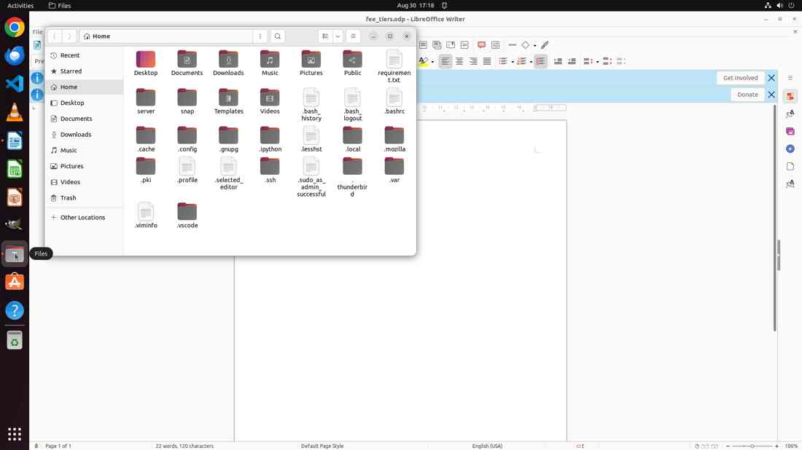
step 2 02:19:07
THINKINGThe window title shows "fee_tiers.odp - LibreOffice Writer". So the file is fee_tiers.odp but opened in Writer? That's odd. An .odp file is Impress. But the title says Writer. Maybe it was opened as Writer. The file is in Home directory. I don't see fee_tiers.odp in the Files listing though. It might be in Documents. Let me check Documents folder. Actually the title bar says the file is open. Let me find it. It's not in Home. Let me check Documents.
ACTIONThe open file is `fee_tiers.odp` (a presentation). Let me locate it in the file system. It's not in Home, so let me check Documents.
EXECUTED (pyautogui in VM)pyautogui.click(180, 285)
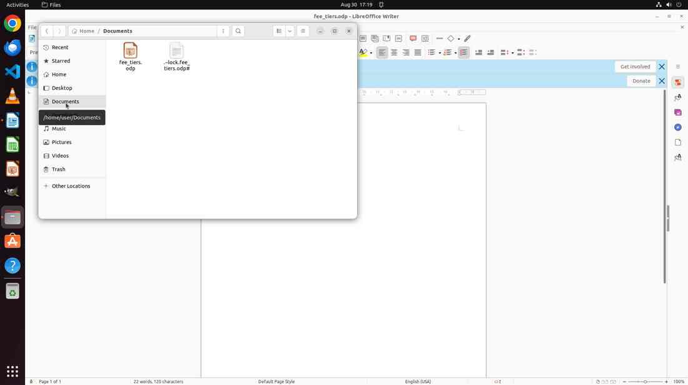
step 3 02:19:19
THINKINGFound `fee_tiers.odp` in /home/user/Documents. The lock file indicates it's currently open (in Writer, oddly). It's an .odp presentation. I need to open it in Impress to work with slides. Let me close this Files window and open the file in Impress.
Actually, the file is currently open in Writer which is strange. Let me open it properly in Impress. I'll double-click the file in Files - but it's already open, so it might just focus the Writer window.
Better approach: close the Writer instance first, then open the .odp in Impress. Or I could open the .odp directly - since it's already open, double-click may switch to it. But it opened in Writer. Let me close the Writer window first (without saving since I haven't made changes), then open in Impress.
Actually the cleanest: In the Files window, I'll right-click fee_tiers.odp and open with LibreOffice Impress. But it's locked. Let me first close the Writer window.
Let me close the Files window and go to Writer. Actually, let me just close the Writer app and reopen the file with Impress. Let me double-click to see what happens - it might prompt or just open.
Let me close the files window first.
ACTIONFound `fee_tiers.odp` in Documents. It's currently open in Writer (which is unusual for a presentation). I'll close it and open it properly in Impress. Let me close the Files window first.
EXECUTED (pyautogui in VM)pyautogui.click(970, 83)
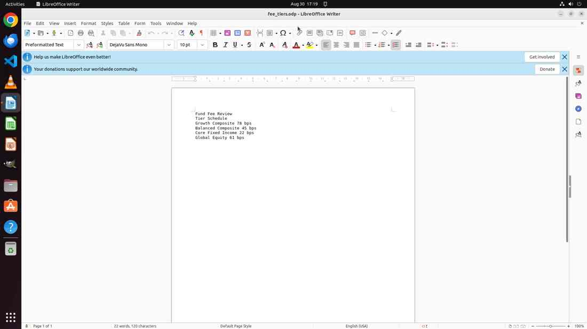
step 4 02:19:29
THINKINGThe file fee_tiers.odp is open in Writer, showing the text as a flat document (Impress content rendered as text because it was opened in Writer). This is problematic. I need to work with it as a presentation in Impress.
I need to close this Writer window without saving (it's the same .odp file opened in Writer which is unusual), then open it in Impress. Let me close the Writer window. I'll use File > Close or just the X. It may prompt to save. Since I haven't changed anything, it should close. But to be safe, if it asks, I'll click "Don't Save" or "Discard" to avoid corrupting the .odp with Writer's text format.
Actually wait - if this .odp was opened in Writer and I close without saving, the original file remains intact as a presentation. Good. Let me close it.
Let me click the X or use Ctrl+W. Let me close via the window close button. Actually there's no X visible clearly in the Writer window - the title bar shows fee_tiers.odp. Let me use Ctrl+W.
ACTIONThe .odp presentation is currently open in Writer (rendering its content as plain text). I need to work with it as a real presentation in Impress. Let me close this Writer instance without saving, then reopen in Impress.
EXECUTED (pyautogui in VM)pyautogui.hotkey("ctrl", "w")
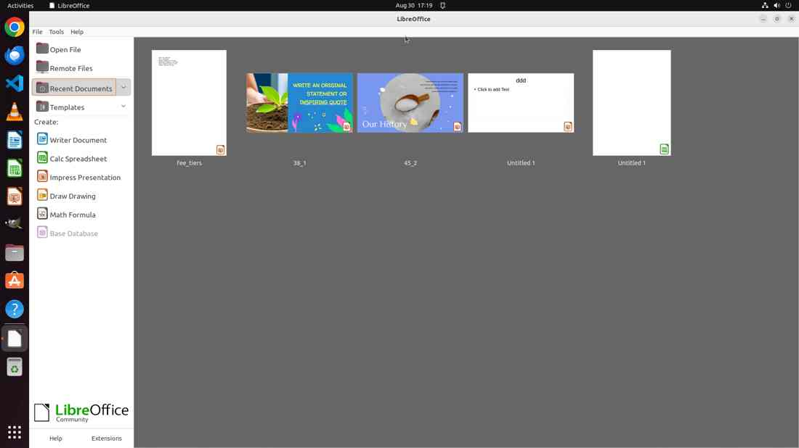
step 5 02:19:37
THINKINGGood, it closed without a save prompt (no changes were made). Now I'm at the LibreOffice Start Center. I can see "fee_tiers" in recent documents with an Impress icon. Let me open it by double-clicking the fee_tiers thumbnail.
ACTIONThe Writer window closed. Now I'm at the Start Center and can see `fee_tiers` in recent documents with an Impress icon. Let me open it in Impress.
EXECUTED (pyautogui in VM)pyautogui.doubleClick(453, 245)
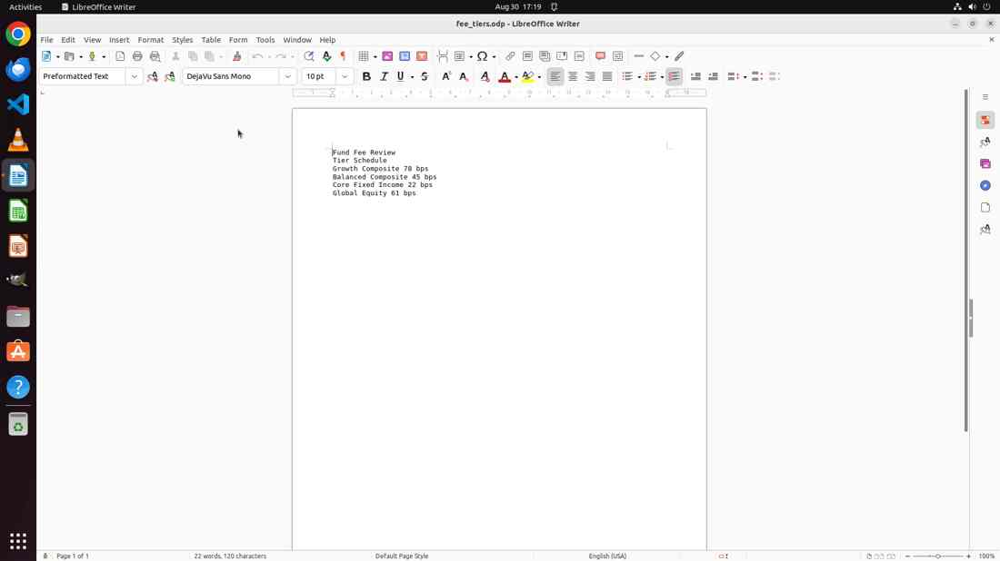
step 6 02:19:52
THINKINGIt opened in Writer again, not Impress! The title says "fee_tiers.odp - LibreOffice Writer". This is a problem - the .odp file is being opened in Writer.
This is strange. Normally .odp opens in Impress. Maybe the recent document association opened it in Writer because it was last opened in Writer.
I need to force it to open in Impress. Let me close this and use File > Open, then explicitly choose Impress, or right-click > Open With > LibreOffice Impress.
Actually, a cleaner approach: I need to understand what the actual deck looks like. The Writer is just showing text. But I don't trust that rendering. Let me force open in Impress.
Let me close this Writer window first (Ctrl+W), then from Start Center use "Open File" and navigate, or better, open the Files app and right-click > Open With > Impress.
Actually, the simplest reliable method: Close Writer, then in LibreOffice Start Center, click "Impress Presentation" won't open the existing file. I need to open the specific file.
Let me close Writer and use the Files app to right-click fee_tiers.odp > Open With > LibreOffice Impress.
Let me close first.
ACTIONIt opened in Writer again due to the last-used application association. I need to force it to open in Impress. Let me close this and open it explicitly with Impress via the file manager.
EXECUTED (pyautogui in VM)pyautogui.hotkey("ctrl", "w")
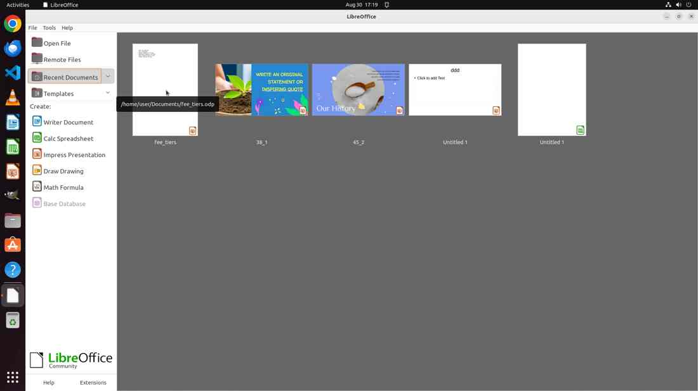
step 7 02:20:01
THINKINGBack at Start Center. I want to open the file specifically in Impress. Let me open Impress first by clicking "Impress Presentation", then use File > Open within Impress to open fee_tiers.odp - that will open it in Impress. Actually, opening a new Impress document then opening the file might still open in Writer if the file association forces it.
Better: use "Open File" from Start Center. But the issue is which app handles the .odp. Actually the recent-documents double-click used the last app. The reliable way is to launch Impress, then File > Open the .odp from within Impress - Impress will open its own .odp natively.
Let me click "Impress Presentation" to launch Impress.
ACTIONLet me launch Impress directly, then open the file from within it so it loads as a proper presentation.
EXECUTED (pyautogui in VM)pyautogui.click(205, 427)
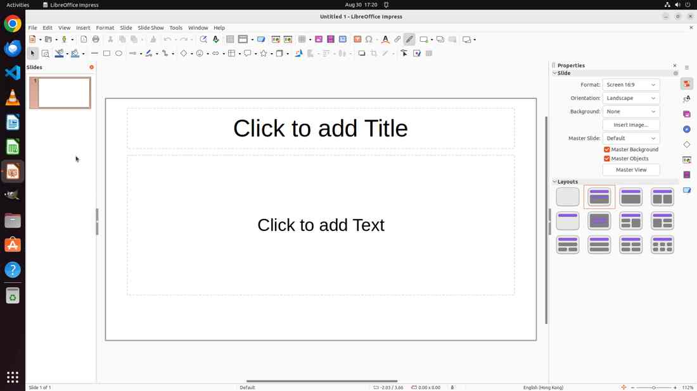
step 8 02:20:11
THINKINGImpress is now open with a blank "Untitled 1" presentation. Now I'll open fee_tiers.odp from within Impress using File > Open. Let me use Ctrl+O.
ACTIONImpress is now open. Let me open the fee_tiers.odp file from within Impress so it loads as a real presentation.
EXECUTED (pyautogui in VM)pyautogui.doubleClick(632, 270)
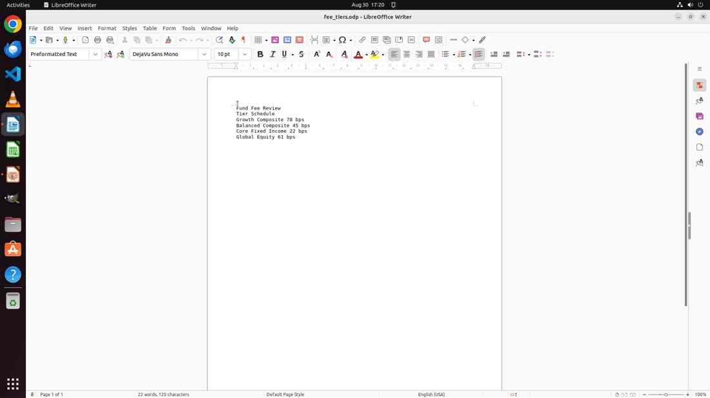
step 10 02:20:49
THINKINGIt opened in Writer AGAIN, even from within Impress's Open dialog! The title says "fee_tiers.odp - LibreOffice Writer". This strongly suggests the file's actual content is a Writer document (a .txt or .odt saved with .odp extension), OR the file is genuinely a presentation but LibreOffice is mis-associating.
Wait - the Open dialog showed Type: "Presentation" for the file. But it still opened in Writer. That's very strange.
Actually, this might be because the file is genuinely a text-based document disguised as .odp. The content "Fund Fee Review / Tier Schedule / ..." is plain text lines - consistent with a Writer doc, not a multi-slide presentation.
Hmm, but the dialog clearly said Type: Presentation and the Start Center showed an Impress icon for fee_tiers. Yet it opens in Writer.
Possibility: LibreOffice uses the "last application that opened this file" to decide. Since it was opened in Writer, it keeps opening in Writer regardless. This is a known LibreOffice behavior where if a document was opened in a "wrong" component, it stays.
Let me check the actual file content. Let me examine the file. Since I can only use GUI, let me look. Actually, I should determine what this file truly is.
Let me reconsider the whole task. The task talks about "this deck's tier slide" - a slide. So the file IS meant to be a presentation with slides. The intro slide (Fund Fee Review / Tier Schedule) is slide 1, and the tier slide has all 4 tiers as lines. But when opened in Writer it shows flat text.
The key insight: The file might actually be a genuine .odp but LibreOffice is opening it in Writer because... maybe the mimetype is wrong, or maybe it's actually stored as a Writer document with .odp extension.
Let me verify by examining the file. I'll open a terminal. Is there a terminal? I can open Files and see, or use the "Files" - but I need a terminal. Let me look for a terminal app. There's no obvious terminal in the dock.
Alternative: Let me look at the file properties. Actually, let me just try to determine the truth. The task requires me to produce a presentation with slides. Regardless of whether the source is a "real" odp, my job is: create slides where intro is first, then one slide per tier (title=tier name, body=bps figure), ordered lowest bps first.
The tier lines:
- Growth Composite 78 bps
- Balanced Composite 45 bps
- Core Fixed Income 22 bps
- Global Equity 61 bps
Ordered lowest bps first:
- Core Fixed Income 22 bps
- Balanced Composite 45 bps
- Global Equity 61 bps
- Growth Composite 78 bps
So the final deck:
1. Intro slide: "Fund Fee Review" (title) - "Tier Schedule" (subtitle/body)
2. Core Fixed Income — body "22 bps"
3. Balanced Composite — body "45 bps"
4. Global Equity — body "61 bps"
5. Growth Composite — body "78 bps"
Now the question is whether to edit the existing file or build in the blank Impress. The cleanest approach: I should modify the actual fee_tiers.odp file. But it keeps opening in Writer.
Let me determine the file's real nature. Let me open a terminal to inspect. I'll check if there's a terminal application. Let me look at the Activities/apps. Actually, I recall the file has a lock file which means it's "open".
Let me think differently. The fact that the .odp opens in Writer as plain text with the exact lines suggests the .odp is actually a Writer-format file (the content is what LibreOffice Writer would produce). But a real .odp presentation would NOT open in Writer showing all text flat; Impress would show slides.
Actually here's a strong possibility: The .odp file was created but has slides, and when opened, LibreOffice decided to open in the last component (Writer) which can't properly render Impress content but shows the text of all slides flattened. That's actually plausible - Writer opening an .odp would show the text content of all slides in a flat way.
But I can't edit slides in Writer. I need Impress.
The real fix: I must get Impress to open this file. Since Impress's own Open dialog also sent it to Writer, the association is stuck on Writer.
Option: Delete or rename the recent association. Or open a fresh LibreOffice instance command-line: soffice --impress file.odp. But I don't have a terminal readily.
Let me get a terminal. I'll check the dock / applications grid (the 9-dots at bottom left). Let me look for a Terminal.
Actually, simpler: The file keeps opening in Writer. Let me first CLOSE the Writer instance (it's open now), close the blank Impress too, and then find a terminal to run: soffice --impress /home/user/Documents/fee_tiers.odp
Let me open the applications grid to find a terminal.
ACTIONIt opened in Writer again — the file association is stuck. I need a terminal to launch Impress explicitly. Let me open the applications grid to find a terminal.
EXECUTED (pyautogui in VM)pyautogui.click(901, 647)
step 12 02:21:05
THINKINGTerminal is open. Let me inspect the file. First, let me check what kind of file it really is and its content. Let me run: file and unzip -l on the .odp.
ACTIONTerminal is open. Let me inspect the actual file type and structure of fee_tiers.odp.
EXECUTED (pyautogui in VM)pyautogui.press("return")
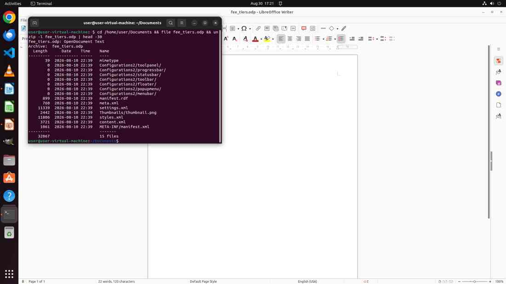
step 15 02:21:51
THINKINGKey finding: `fee_tiers.odp: OpenDocument Text` — the file is actually an OpenDocument TEXT (Writer .odt) file, NOT a presentation (OpenDocument Presentation). The mimetype is "OpenDocument Text". That's why it opens in Writer. The .odp extension is misleading.
So the source is a Writer document, not a real slide deck. The task talks about "deck" and "slides" as a conceptual framing, but the actual deliverable must be a presentation with slides.
Wait, re-read the task: "split this deck's tier slide into one slide per tier line, title exactly the tier name, body exactly the bps figure as written, ordered lowest bps first, and keep the intro slide first."
The task assumes there's a deck with an intro slide and a tier slide. But the file is actually a Writer doc. This is a mismatch. However, the intended deliverable is clear: produce a presentation (deck) with:
- Slide 1: intro slide (the "Fund Fee Review" / "Tier Schedule" content) - keep first
- Then one slide per tier line, ordered lowest bps first, title = tier name, body = bps figure as written.
Since the source is a Writer doc, I should create the actual presentation. But what's the expected output file? The task says "split this deck's tier slide". The evaluation likely checks fee_tiers.odp (the .odp file) becomes a presentation with the required slides.
Given the file is genuinely an ODT mislabeled as ODP, I think the intended workflow is: this file represents the "deck" content, and I need to turn it into a real multi-slide presentation. The most sensible deliverable is to make fee_tiers.odp a proper Impress presentation with the required slides.
Approach: I'll create the presentation in Impress (the blank "Untitled 1" I opened earlier), build the 5 slides, and Save As to overwrite /home/user/Documents/fee_tiers.odp as ODP format. That way the file becomes a real presentation.
But wait - I should be careful. The evaluation might expect the file at fee_tiers.odp to be a valid .odp presentation. Creating it fresh in Impress and saving to that path (overwriting) as ODP is the right move.
Let me confirm the content.xml to see the exact text, to make sure I capture "bps figure as written". Let me check content. Let me cat the content.xml.
Actually the text is clear from the screenshots:
- Fund Fee Review
- Tier Schedule
- Growth Composite 78 bps
- Balanced Composite 45 bps
- Core Fixed Income 22 bps
- Global Equity 61 bps
But "body exactly the bps figure as written" - so body should be "78 bps", "45 bps", "22 bps", "61 bps". Title = "Growth Composite" etc.
Let me verify exact content by viewing content.xml to be safe about exact figures and any hidden characters.
ACTIONImportant finding: `fee_tiers.odp` is actually an **OpenDocument Text** (a Writer document), not a real presentation. That's why it keeps opening in Writer. The task wants a slide deck, so I'll build a proper Impress presentation and save it as `fee_tiers.odp`. First, let me verify the exact content from the XML.
EXECUTED (pyautogui in VM)pyautogui.typewrite("unzip -p fee_tiers.odp content.xml | tr '>' '>\\n' | grep -A2 text:p | head -60")
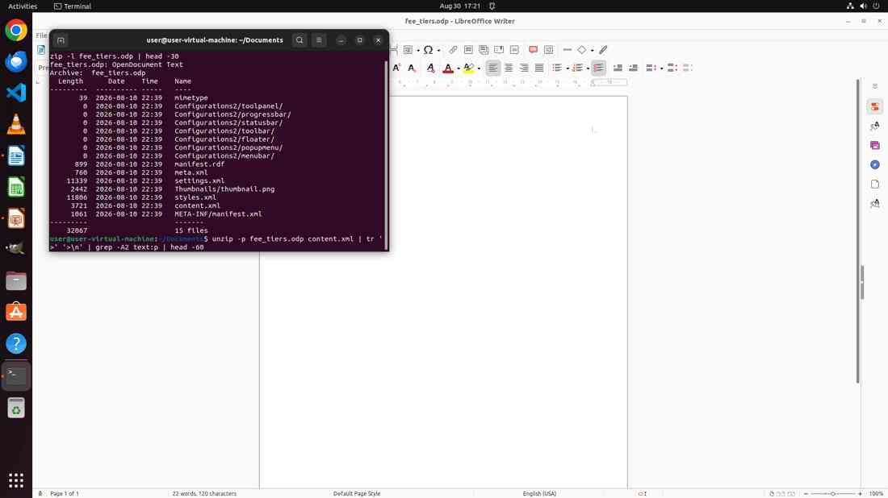
step 16 02:21:59
THINKINGThe command is typed but not executed yet (the Enter at end of my type didn't register - the display shows the command still on the prompt line). Let me press Enter.
EXECUTED (pyautogui in VM)pyautogui.press("return")
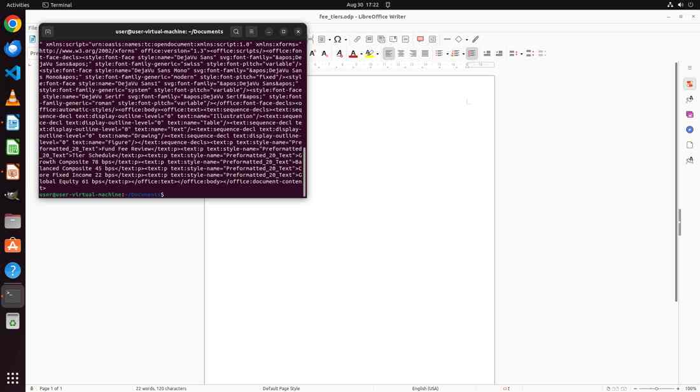
step 17 02:22:19
THINKINGNow I can read the exact content:
- "Fund Fee Review"
- "Tier Schedule"
- "Growth Composite 78 bps"
- "Balanced Composite 45 bps"
- "Core Fixed Income 22 bps"
- "Global Equity 61 bps"
All in text:p with style "Preformatted_20_Text". Confirmed exactly.
So the deliverable presentation:
1. Intro slide: title "Fund Fee Review", body "Tier Schedule"
2. Core Fixed Income — body "22 bps"
3. Balanced Composite — body "45 bps"
4. Global Equity — body "61 bps"
5. Growth Composite — body "78 bps"
Now, the intro slide: "keep the intro slide first". The intro slide is the one with "Fund Fee Review" (title) and "Tier Schedule" (subtitle). I'll make slide 1 = title "Fund Fee Review", subtitle "Tier Schedule".
Now I need to create this in Impress and save to /home/user/Documents/fee_tiers.odp overwriting as ODP.
Currently open:
- LibreOffice Writer with fee_tiers.odp (the ODT-as-ODP)
- LibreOffice Impress "Untitled 1" (blank, opened earlier)
I'll use the blank Impress "Untitled 1" to build the deck. But first I should close the Writer window to release the lock on fee_tiers.odp, so I can overwrite it later. Actually, to overwrite fee_tiers.odp I need to close the Writer instance holding it (the lock file). Let me close the Writer window (it has no changes, so no save prompt).
Let me switch to Writer and close it. The Writer window is behind. Let me click on the taskbar/title. Actually the Writer window title is "fee_tiers.odp - LibreOffice Writer" visible at top. Let me click on its area or use the window.
Plan:
1. Close the Writer window (fee_tiers.odp) to release lock. Click on Writer window, Ctrl+W.
2. Go to the blank Impress "Untitled 1".
3. Build 5 slides.
4. Save As to /home/user/Documents/fee_tiers.odp in ODP format.
Let me first bring the Writer window to front. I'll click on the Writer title bar area (visible at top "fee_tiers.odp - LibreOffice Writer" at ~663,30). Actually clicking title bar of an occluded window might not focus it. Better to use the taskbar. There's no visible taskbar. Let me use Activities or Alt+Tab.
Let me use Alt+Tab to cycle windows. Actually, let me just click on the visible Writer menu bar at top. The top shows "fee_tiers.odp - LibreOffice Writer" title bar spanning full width at y~30. Let me click on the Writer window's visible content (the white document area on the right side at ~700,400).
ACTIONI've confirmed the exact content. Now let me build the presentation. First, I'll close the Writer instance holding the lock on `fee_tiers.odp` so I can overwrite it later. Let me switch to the Writer window.
EXECUTED (pyautogui in VM)pyautogui.hotkey("ctrl", "w")
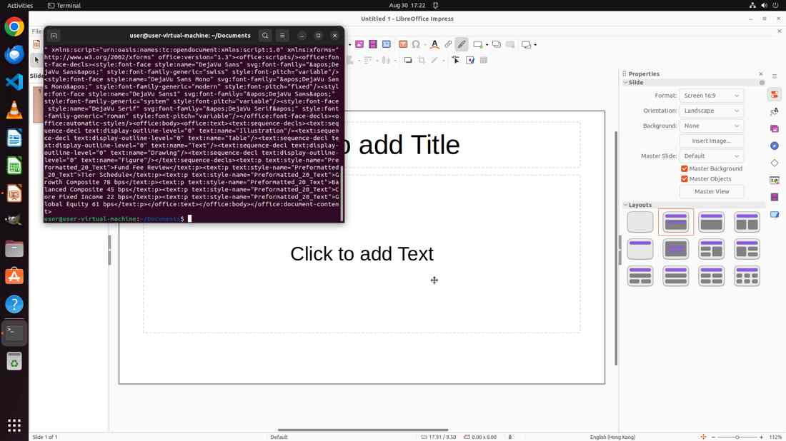
step 19 02:22:43
THINKINGThe Writer closed and now I see the Impress "Untitled 1" window behind the terminal, with a slide showing "Click to add Title" and "Click to add Text". Let me move the terminal out of the way. I'll minimize the terminal or move it. Let me click on the Impress window to bring it to front, then minimize terminal.
Actually, the terminal is overlapping. Let me minimize the terminal by clicking its minimize button (the - at ~491,57).
ACTIONThe Writer instance is closed. Now the blank Impress window is behind the terminal. Let me minimize the terminal to work in Impress.
EXECUTED (pyautogui in VM)pyautogui.click(734, 83)
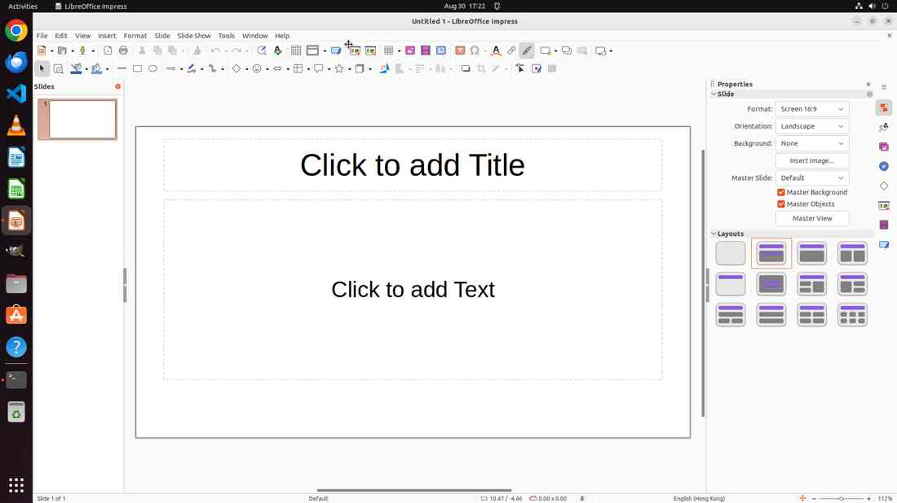
step 20 02:22:58
THINKINGNow I have a clean blank Impress with one slide (title + content layout). I'll use the Outline view which is much faster for building slides with titles and body text. Let me switch to View > Outline. In outline view, top-level lines become slide titles, and tabbed-in lines become body bullets.
Plan in Outline view:
Line 1 (title): Fund Fee Review
Tab (body): Tier Schedule
Line 2 (title): Core Fixed Income
Tab (body): 22 bps
Line 3 (title): Balanced Composite
Tab (body): 45 bps
Line 4 (title): Global Equity
Tab (body): 61 bps
Line 5 (title): Growth Composite
Tab (body): 78 bps
This is the cleanest way. Let me switch to Outline view. View menu > Outline. Or the outline button in sidebar. Let me use the View menu.
Actually, I need to be careful: in outline view, the title of the intro slide should be "Fund Fee Review" and body "Tier Schedule". That matches the "intro slide first". Good.
Let me click View menu.
ACTIONNow I have a clean blank Impress. The fastest way to build multiple titled slides is Outline view. Let me switch to it via the View menu.
EXECUTED (pyautogui in VM)pyautogui.click(205, 125)
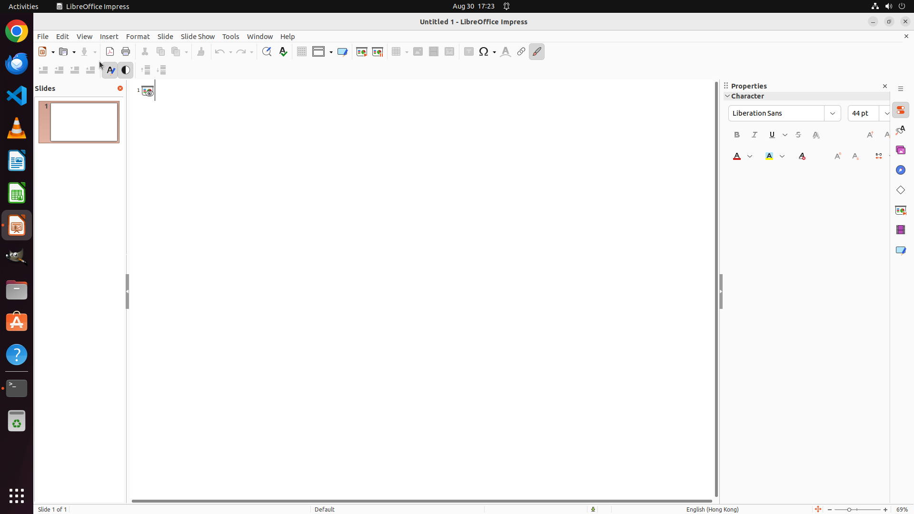
step 22 02:23:29
THINKINGI'm in Outline view now with an empty outline (cursor at slide 1 title). I'll type the content. In outline view:
- Type title, press Enter -> new title line (new slide)
- Tab -> demotes to body bullet
- Enter -> new bullet at same level
- Shift+Tab -> promote back to title (new slide)
Sequence:
1. "Fund Fee Review" (title of slide 1)
2. Enter
3. Tab (demote to body)
4. "Tier Schedule"
5. Enter
6. Shift+Tab (promote to title -> slide 2)
7. "Core Fixed Income"
8. Enter
9. Tab
10. "22 bps"
11. Enter
12. Shift+Tab
13. "Balanced Composite"
14. Enter
15. Tab
16. "45 bps"
17. Enter
18. Shift+Tab
19. "Global Equity"
20. Enter
21. Tab
22. "61 bps"
23. Enter
24. Shift+Tab
25. "Growth Composite"
26. Enter
27. Tab
28. "78 bps"
I'll click into the outline text area first to ensure focus. The cursor appears to be at the top. Let me click in the outline area at ~300,128 first to be safe, then type.
I need to be careful that typing "bps" or tab sequences work. Let me batch this. I'll use key for Tab and Shift+Tab, and type for text. Note that the "type" action types literal text; newlines within type would create new lines but I want to control demotion, so I'll separate each step.
Let me batch the whole sequence. But there's risk: autocorrect might capitalize or change things. "bps" lowercase should be fine. Titles like "Core Fixed Income" - autocapitalize is fine (already capitalized).
One concern: When I type text and it starts a new slide title after Shift+Tab, the previous line was a body bullet. Pressing Enter creates a new bullet at body level, then Shift+Tab promotes it to a new slide title. Good.
Let me click in the outline area first.
ACTIONI'm in Outline view. Now I'll build all slides: type each title, Tab to add the body line, then Enter + Shift+Tab to start the next slide. Let me click into the outline area first.
EXECUTED (pyautogui in VM)pyautogui.click(449, 191)
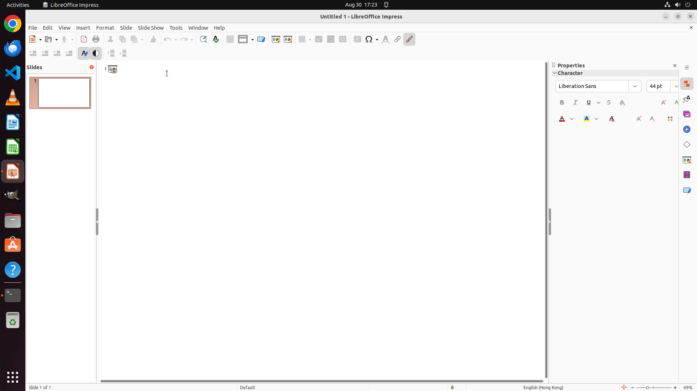
step 23 02:23:44
THINKINGThe cursor is in the outline at slide 1 title position. Now I'll type the full sequence. Let me batch all actions:
- type "Fund Fee Review"
- key Return
- key Tab
- type "Tier Schedule"
- key Return
- key shift+Tab
- type "Core Fixed Income"
- key Return
- key Tab
- type "22 bps"
- key Return
- key shift+Tab
- type "Balanced Composite"
- key Return
- key Tab
- type "45 bps"
- key Return
- key shift+Tab
- type "Global Equity"
- key Return
- key Tab
- type "61 bps"
- key Return
- key shift+Tab
- type "Growth Composite"
- key Return
- key Tab
- type "78 bps"
Let me do this in one batch.
ACTIONNow I'll type the entire outline in one batch, using Tab to demote to body text and Shift+Tab to start a new slide title.
TOOL CALL<tool_call>
<function=computer_use>
<parameter=action>
type
</parameter>
<parameter=text>
Fund Fee Review
</parameter>
</function>
</tool_call>
EXECUTED (pyautogui in VM)pyautogui.typewrite("Fund Fee Review")
step 24 02:23:54
THINKING"Fund Fee Review" is typed as slide 1 title. Now I'll continue with the rest of the sequence. Let me batch: Return, Tab, "Tier Schedule", Return, Shift+Tab, then the four tiers. I'll do the whole remaining sequence in one batch.
ACTIONSlide 1 title is set. Now I'll enter the body and the remaining four tier slides in one batch.
EXECUTED (pyautogui in VM)pyautogui.press("return")
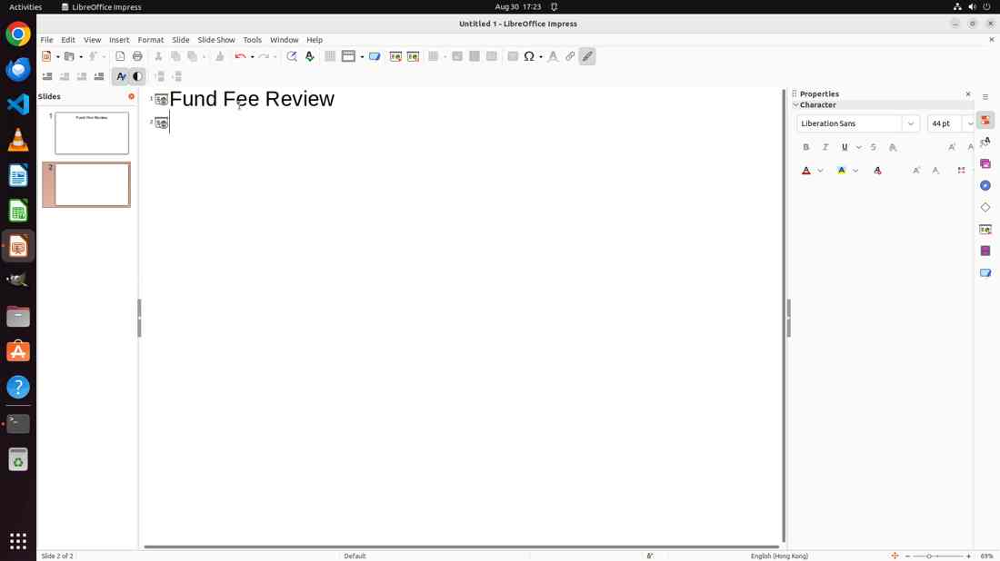
step 25 02:24:04
THINKINGA new slide 2 title line was created. Now I need to Tab to demote to body level for slide 1's "Tier Schedule". Let me do the Tab and type "Tier Schedule".
ACTIONNow a new slide line was created. I'll Tab to demote it to body level and type the intro subtitle.
THINKINGNow it's back to slide 1 (font 32pt, body level). The Tab demoted the empty line to a body bullet under slide 1. Now I'll type "Tier Schedule". Then continue with the tiers. Let me batch the entire remaining sequence now that I've verified Tab behavior works.
Remaining:
- type "Tier Schedule"
- Return, shift+Tab
- type "Core Fixed Income"
- Return, Tab
- type "22 bps"
- Return, shift+Tab
- type "Balanced Composite"
- Return, Tab
- type "45 bps"
- Return, shift+Tab
- type "Global Equity"
- Return, Tab
- type "61 bps"
- Return, shift+Tab
- type "Growth Composite"
- Return, Tab
- type "78 bps"
Let me batch all of this.
ACTIONThe body level is set. Now I'll type the intro subtitle and all four tier slides (ordered lowest bps first) in one batch.
EXECUTED (pyautogui in VM)pyautogui.press("return")
step 28 02:24:44
THINKINGNow I'm on a new body bullet under slide 1. I need Shift+Tab to promote it to a new slide title. Let me do shift+Tab then type "Core Fixed Income". Then I'll batch the rest. Let me do shift+Tab first and verify it creates slide 2.
EXECUTED (pyautogui in VM)pyautogui.hotkey("shift", "tab")
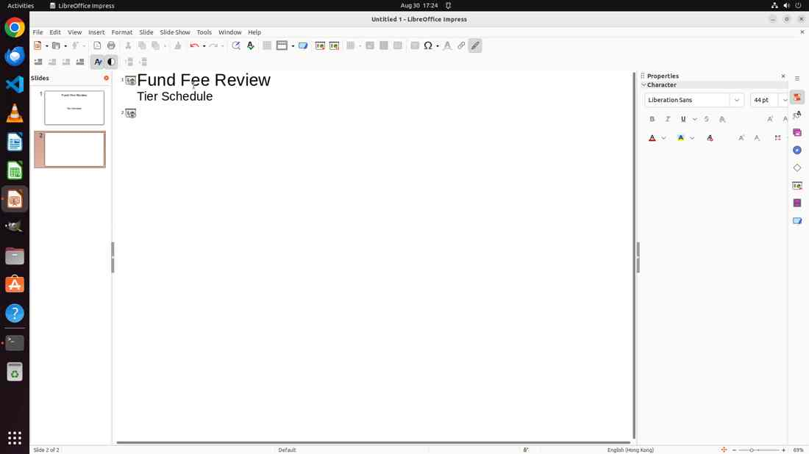
step 29 02:24:58
THINKINGSlide 2 title is ready (font 44pt, slide 2). The pattern works reliably. Now I'll batch the entire remaining sequence: type title, Return, Tab, body, Return, shift+Tab, repeat. I'll type "Core Fixed Income" now and continue. Since each step is verified, I can safely batch a large sequence.
Remaining:
1. type "Core Fixed Income"
2. Return
3. Tab
4. type "22 bps"
5. Return
6. shift+Tab
7. type "Balanced Composite"
8. Return
9. Tab
10. type "45 bps"
11. Return
12. shift+Tab
13. type "Global Equity"
14. Return
15. Tab
16. type "61 bps"
17. Return
18. shift+Tab
19. type "Growth Composite"
20. Return
21. Tab
22. type "78 bps"
Let me batch these all.
ACTIONSlide 2 title is ready and the pattern works reliably. Now I'll type all four tier titles and bodies in one batch.
TOOL CALL<tool_call>
<function=computer_use>
<parameter=action>
type
</parameter>
<parameter=text>
Core Fixed Income
</parameter>
</function>
</tool_call>
EXECUTED (pyautogui in VM)pyautogui.typewrite("Core Fixed Income")
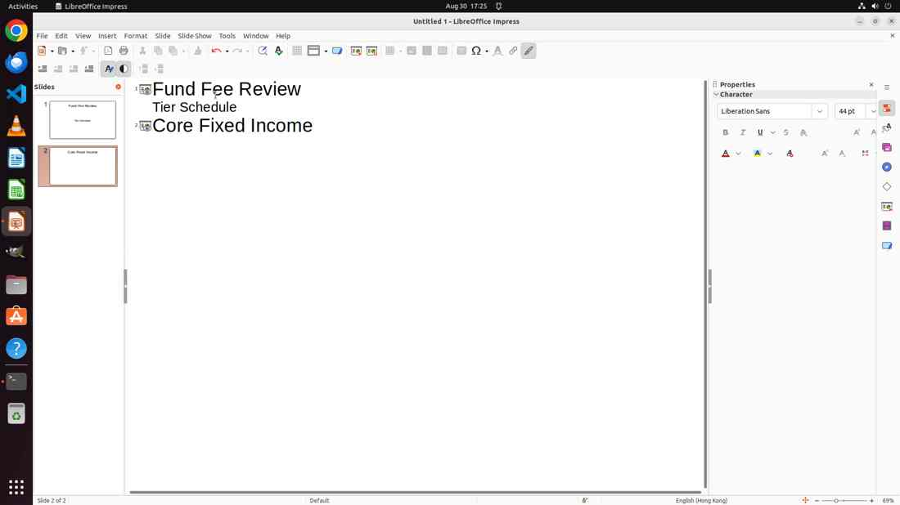
step 30 02:25:09
THINKING"Core Fixed Income" is slide 2 title. Now I'll batch the rest of the sequence since the pattern is proven. The remaining actions in one batch:
- Return, Tab, "22 bps", Return, shift+Tab, "Balanced Composite", Return, Tab, "45 bps", Return, shift+Tab, "Global Equity", Return, Tab, "61 bps", Return, shift+Tab, "Growth Composite", Return, Tab, "78 bps"
I'll issue these as a single tool call with multiple actions.
ACTIONNow I'll complete all remaining body lines and tier slides in a single batch.
EXECUTED (pyautogui in VM)pyautogui.press("return")
step 31 02:25:23
THINKINGNow slide 3 title was created. I need to Tab to demote to body, type "22 bps", then Return + shift+Tab for the next. Since I now confirm the pattern works, I'll batch a large sequence. But I realize the previous step returned a new slide (title level). So now I need to Tab to make it a body line under slide 2 (Core Fixed Income).
Let me batch: Tab, "22 bps", Return, shift+Tab, "Balanced Composite", Return, Tab, "45 bps", Return, shift+Tab, "Global Equity", Return, Tab, "61 bps", Return, shift+Tab, "Growth Composite", Return, Tab, "78 bps".
I'll put these all in one tool call as a sequence of actions.
ACTIONNow I'll batch the entire remaining sequence: demote to body, add the figure, then create the next tier slide, repeating for all remaining tiers.
THINKINGNow I'm at body level (32pt) under Core Fixed Income with a bullet. I'll now type "22 bps" and then batch the rest. Let me do a large batch:
- type "22 bps"
- Return
- shift+Tab
- type "Balanced Composite"
- Return
- Tab
- type "45 bps"
- Return
- shift+Tab
- type "Global Equity"
- Return
- Tab
- type "61 bps"
- Return
- shift+Tab
- type "Growth Composite"
- Return
- Tab
- type "78 bps"
ACTIONNow at the body level for Core Fixed Income. I'll type the figure and complete all remaining tier slides in one batch.
EXECUTED (pyautogui in VM)pyautogui.typewrite("22 bps")
step 33 02:25:48
THINKING"22 bps" is the body of Core Fixed Income. Now I'll create the remaining three tiers. The sequence: Return, shift+Tab, "Balanced Composite", Return, Tab, "45 bps", Return, shift+Tab, "Global Equity", Return, Tab, "61 bps", Return, shift+Tab, "Growth Composite", Return, Tab, "78 bps". Let me batch all these into one tool call.
ACTIONCore Fixed Income slide is done. Now I'll add the remaining three tier slides (Balanced, Global Equity, Growth) in one batch.
EXECUTED (pyautogui in VM)pyautogui.press("return")
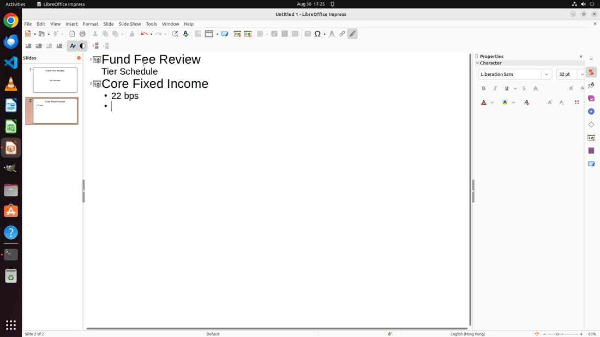
step 34 02:26:00
THINKINGNow I'm on a new body bullet under Core Fixed Income. I need shift+Tab to promote to a new slide title. The pattern is fully confirmed. Now I'll batch the entire remaining sequence in a single tool call:
- shift+Tab
- type "Balanced Composite"
- Return
- Tab
- type "45 bps"
- Return
- shift+Tab
- type "Global Equity"
- Return
- Tab
- type "61 bps"
- Return
- shift+Tab
- type "Growth Composite"
- Return
- Tab
- type "78 bps"
I'll do all in one tool call.
ACTIONNow I'll complete all three remaining tier slides in a single batch.
EXECUTED (pyautogui in VM)pyautogui.typewrite("Balanced Composite")
step 36 02:26:24
THINKING"Balanced Composite" is slide 3 title. Now I need to add "45 bps" as its body, then Global Equity (61 bps), then Growth Composite (78 bps). Let me batch the rest in one tool call:
- Return
- Tab
- type "45 bps"
- Return
- shift+Tab
- type "Global Equity"
- Return
- Tab
- type "61 bps"
- Return
- shift+Tab
- type "Growth Composite"
- Return
- Tab
- type "78 bps"
ACTIONNow I'll finish the last two-and-a-half slides (Balanced body, Global Equity, Growth Composite) in one batch.
EXECUTED (pyautogui in VM)pyautogui.press("return")
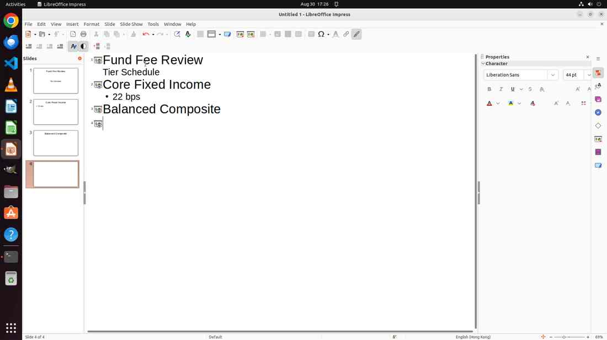
step 37 02:26:36
THINKINGNow I'm on slide 4 title (new). I need Tab to demote to body under slide 3 (Balanced Composite), then type "45 bps". The type action with newlines doesn't work for demotion, so I'll do Tab separately. Let me do Tab, then type "45 bps", then continue. I'll batch: Tab, type "45 bps", Return, shift+Tab, type "Global Equity", Return, Tab, type "61 bps", Return, shift+Tab, type "Growth Composite", Return, Tab, type "78 bps".
Wait, "type" action: can it include the whole thing? No, because demotion requires actual Tab key events, and type sends characters. But Tab within type string might send a tab character which in outline view... Actually typing a tab character in outline might demote. But to be safe I'll use key Tab. I'll batch multiple actions.
Let me batch all remaining as separate actions in one tool call.
ACTIONNow I'll demote to body and complete all remaining content in one batch.
THINKINGNow body level under Balanced Composite. I'll type "45 bps" and then continue. Let me now batch: type "45 bps", Return, shift+Tab, type "Global Equity", Return, Tab, type "61 bps", Return, shift+Tab, type "Growth Composite", Return, Tab, type "78 bps". I'll issue all as separate actions in one tool call.
ACTIONNow at the body level for Balanced Composite. I'll type its figure and finish the last two slides in one batch.
EXECUTED (pyautogui in VM)pyautogui.typewrite("45 bps")
step 39 02:26:56
THINKINGNow I need Global Equity (61 bps) and Growth Composite (78 bps). Let me batch: Return, shift+Tab, type "Global Equity", Return, Tab, type "61 bps", Return, shift+Tab, type "Growth Composite", Return, Tab, type "78 bps". I'll issue all as separate actions in one tool call.
ACTIONNow I'll add the last two tier slides, Global Equity and Growth Composite, in one batch.
EXECUTED (pyautogui in VM)pyautogui.hotkey("shift", "tab")
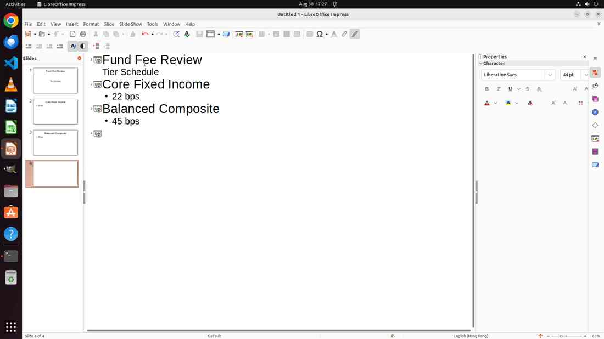
step 41 02:27:17
THINKINGSlide 4 title ready. Now type "Global Equity".
TOOL CALL<tool_call>
<function=computer_use>
<parameter=action>
type
</parameter>
<parameter=text>
Global Equity
</parameter>
</function>
</tool_call>
EXECUTED (pyautogui in VM)pyautogui.typewrite("Global Equity")
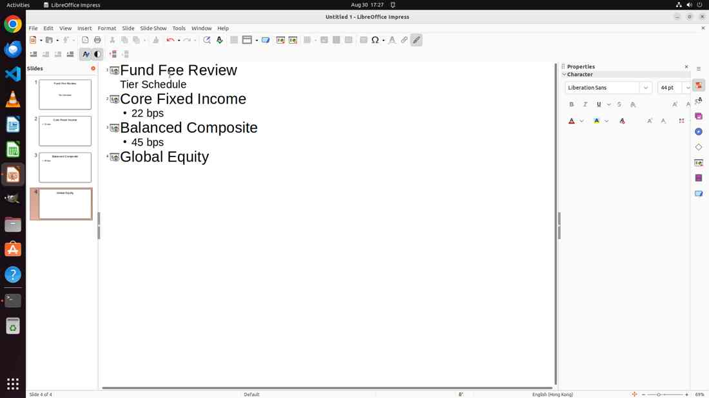
step 42 02:27:29
THINKING"Global Equity" is slide 4 title. Now add "61 bps" as body, then create slide 5 Growth Composite with "78 bps". Let me do: Return, Tab, type "61 bps", Return, shift+Tab, type "Growth Composite", Return, Tab, type "78 bps". I'll do them step by step to be safe but batch where possible. Let me do Return first.
THINKINGNow body level under Global Equity. Type "61 bps". Then Return, shift+Tab, type "Growth Composite", Return, Tab, type "78 bps". Let me type "61 bps".
EXECUTED (pyautogui in VM)pyautogui.typewrite("61 bps")
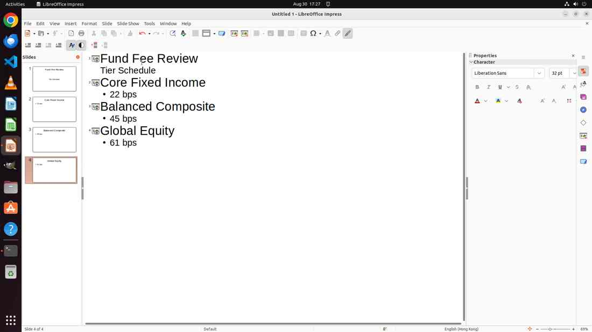
step 45 02:28:00
THINKINGNow the last tier: Growth Composite, 78 bps. Sequence: Return, shift+Tab, type "Growth Composite", Return, Tab, type "78 bps". Let me do Return first.
ACTIONNow the final slide, Growth Composite. Let me create the new slide title.
EXECUTED (pyautogui in VM)pyautogui.press("return")
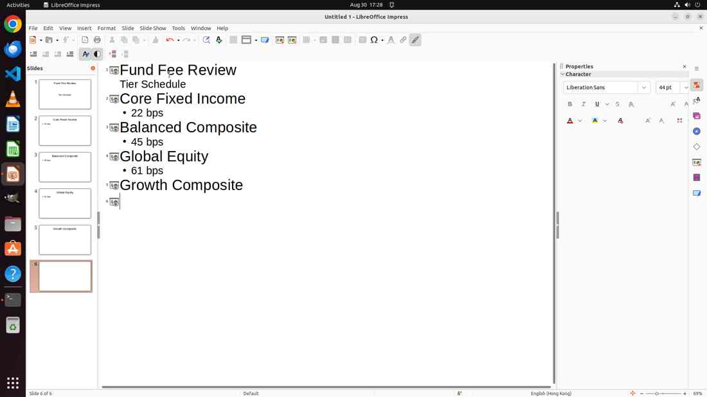
step 49 02:28:52
THINKINGA new slide 6 title line was created (empty). I need Tab to demote it to body under slide 5 (Growth Composite), then type "78 bps". Let me do Tab, then type "78 bps".
ACTIONA new slide 6 line was created. I'll Tab to demote it to body level under Growth Composite, then type the figure.